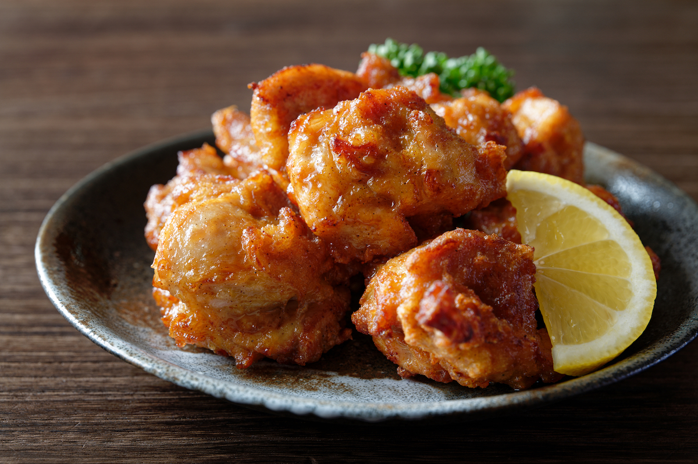
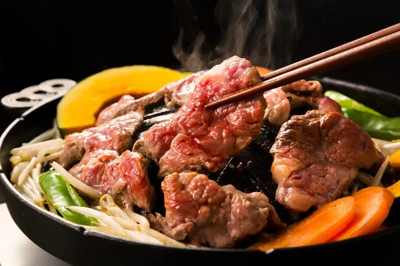
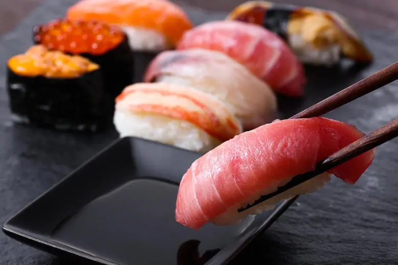
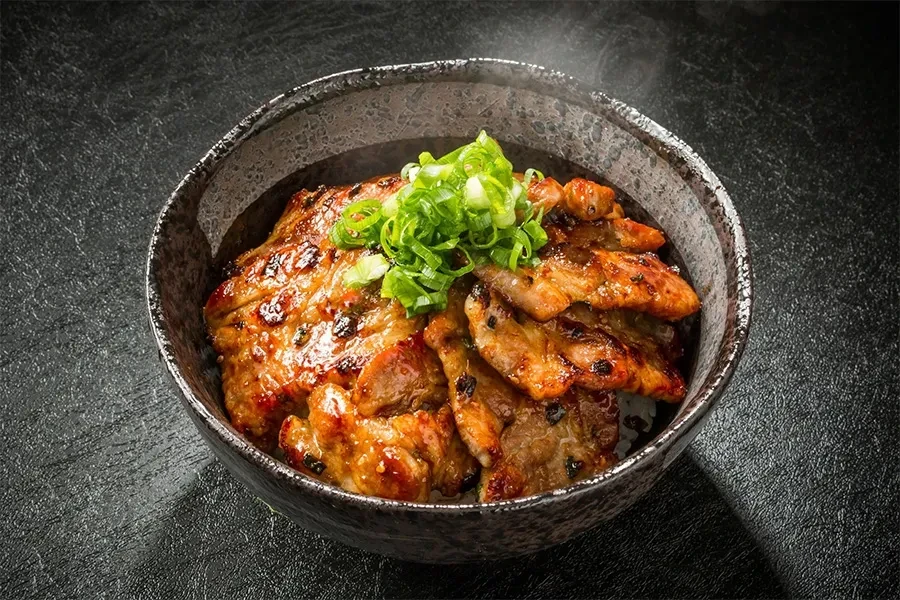

いくら丼
きらめく紅の天然いくらを贅沢に敷き詰めた「いくら丼」
ひと口頬張れば、大粒のいくらがプチプチと音を立てて弾け、濃厚な旨みとコクが口いっぱいに広がります。
まろやかな醤油の風味と炊きたてご飯の相性が抜群で、最後の一粒まで至福の余韻を楽しめる一杯です

ザンギ
鶏もも肉のプリプリとした弾力とジューシーさがたまらない、究極のから揚げ
こんがりキツネ色の衣は、噛んだ瞬間「ザクッ」「バリッ」と小気味よい音を響かせます。
中からあふれ出る肉汁は、生姜と醤油の旨味をまとって熱々。

ジンギスカン
北海道の大地から届く、旨い肉と新鮮な野菜をたっぷりと楽しめます
焼き上げた肉はジューシーで、野菜との相性が最高で、一品一品が味わい深いです。
まろやかな醤油の風味と炊きたてご飯の相性が抜群で、最後の一粒まで至福の余韻を楽しめる一杯です

寿司
圧倒的な鮮度と規格外のネタの大きさが特徴
回らない老舗の名店はもちろん、「トリトン」「根室花まる」といった地元の回転寿司チェーンでさえ、
一歩足を踏み入れればそこはもう海の幸のパラダイスです。
